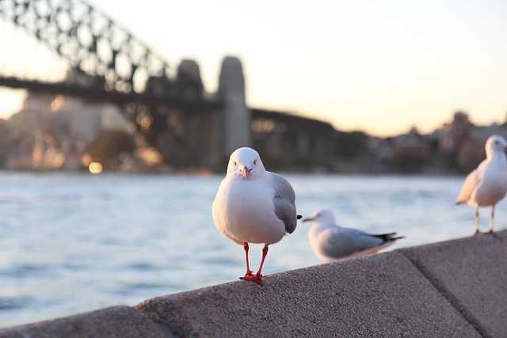

Sdyney is the largest city in Australia, known for its iconic landmarks such as the Sydney Opera House and the Sydney Harbour Bridge. The city is a vibrant cultural hub, offering a mix of beautiful beaches, world-class dining, and a rich arts scene. Visitors can explore the Royal Botanic Garden, take a ferry ride across the harbour, or enjoy the lively atmosphere of Darling Harbour. Sydney's diverse neighborhoods each have their own unique charm, making it a must-visit destination for travelers.
I was born in Sydney, Australia but I only lived for a few years. Around fifth grade I moved to Fiji with my family. I have a lot of memories of Sydney, but the one that stands out the most is when I went to the Sydney Opera House with my family. It was a beautiful day and we took a tour of the building, learning about its history and architecture. The views of the harbour were breathtaking, and I remember feeling so lucky to be there.
(fig1.3)The Sydney Harbour bridge has the most beautiful firworks especially during new years.
(fig1.4)This bird and me go way back. His whole family has been on a constant war with me fighting for my fish and chips.
